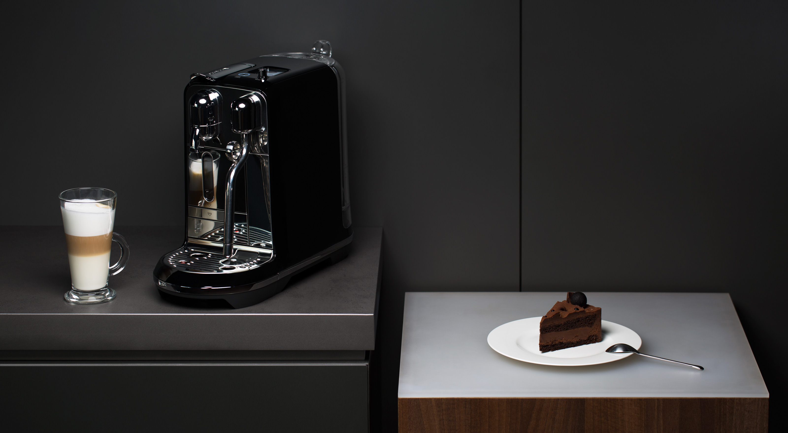
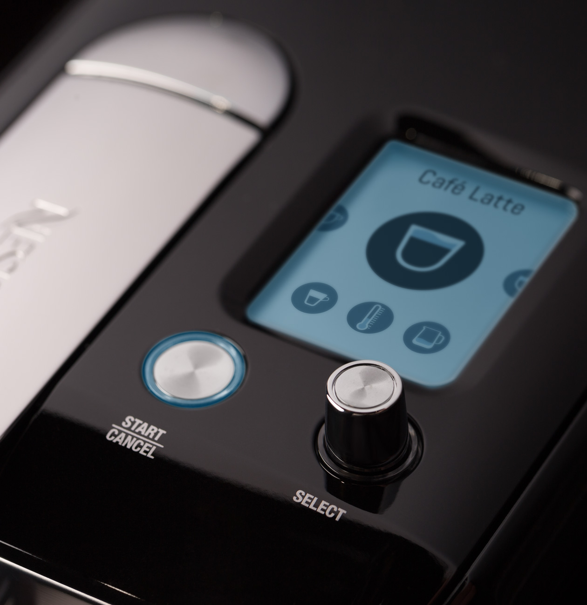
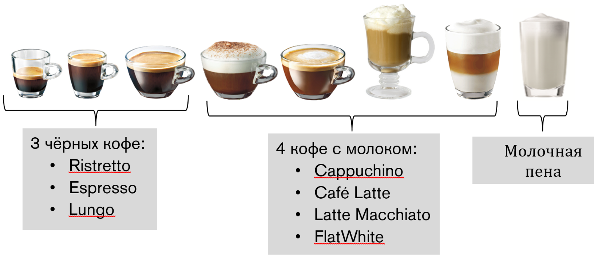
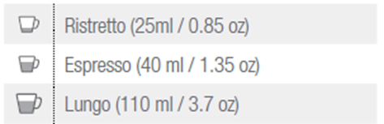
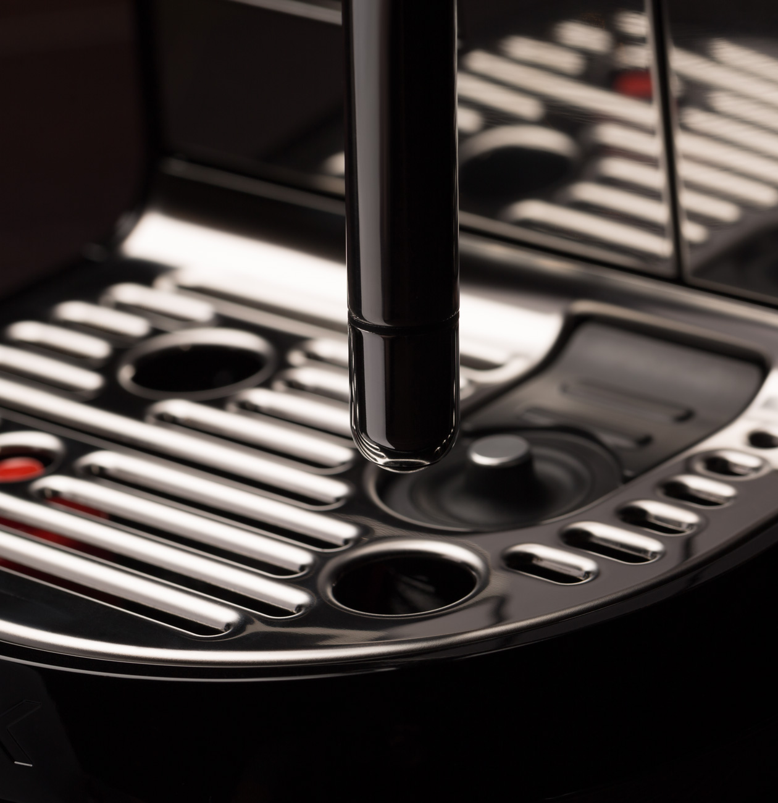
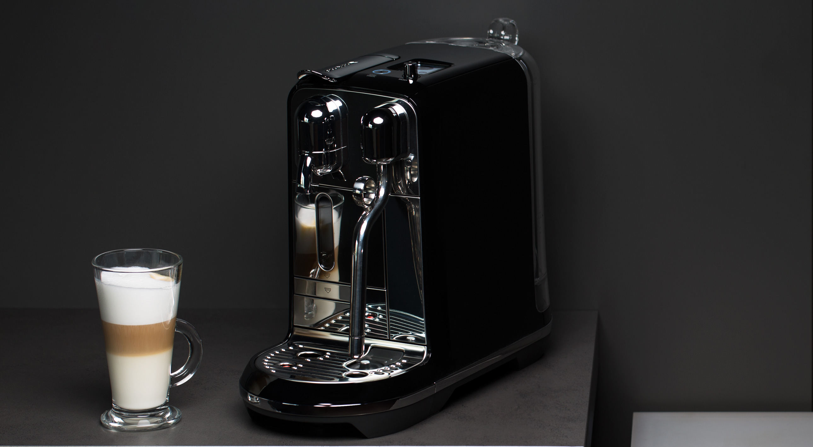
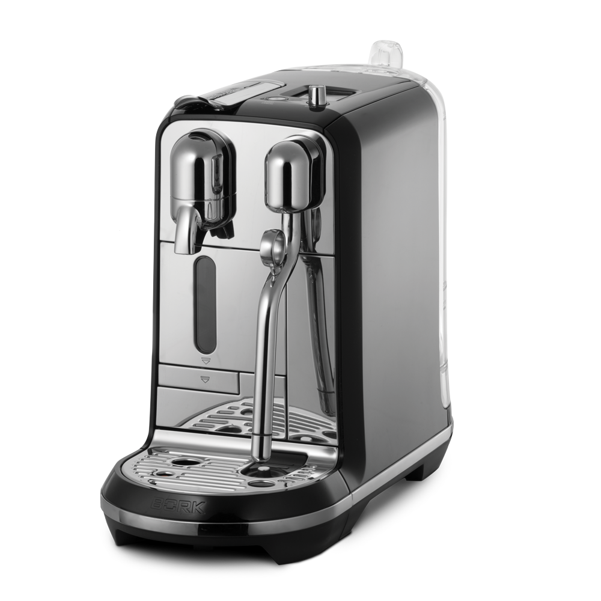

Капсульная кофемашина C730 BK
Эксклюзивная модель для приготовления идеального кофе Nespresso в стильном черном корпусе. Сочетание истинного вкуса, скорости и удобства.
Управление ONE TOUCH
Интуитивно понятный интерфейс и инновационная конструкция заварочного узла позволяют приготовить любимый напиток в считанные секунды. Благодаря продвинутой интеллектуальной начинке и множеству датчиков устройство само напомнит вам о необходимости очистки контейнера для использованных капсул, пустом резервуаре для воды или промывки капучинатора.
Профессиональный бариста на вашей кухне
Насладитесь утренним капучино, классическим эспрессо или насыщенным итальянским ристретто после обеда, ароматным латте или знаменитым флэт уайт. Кофемашина BORK приготовит любой из самых популярных напитков, и каждый раз он будет совершенным.
Режим BARISTA
Программирование черного кофе:
- Ristretto: от 25 до 60 мл
- Espresso: от 25 до 60 мл
- Lungo: от 70 до 150 мл
Программирование кофе с молоком:
- Объем кофе: от 25 до 60 мл
- Температура молока: от 56°С до 76°С
- Объем молочной пены: от 2 до 30 мм
Вы предпочитаете пить кофе погорячее в высокой кружке и с большим количеством пены? Все это можно изменить всего парой нажатий в меню настроек напитка. Впервые персонализация напитка стала настолько простой и понятной. Создайте свой уникальный рецепт с инновационной капсульной кофемашиной BORK C730 BK!
Автоматическая система вспенивания
Впервые в мире в капсульной машине реализована инновационная автоматическая система вспенивания молока, которая позволяет получать молочную пену различной текстуры для создания Latte Art – первенство/новаторство BORK. BORK C730 BK, способна приготовить молоко именно так, как это делают профессиональные бариста в лучших кофейнях мира. Простая в использовании автоматическая/интеллектуальная система вспенивания молока включает:
- настройка температуры молока
- настройка плотности(текстуры) пенки для flat white, latte и cappuchino
- температурный сенсор
- быстрая самоочистка паровой трубки
Для приготовления идеальной мелкоячеистой молочной пены используйте ультрапастеризованное молоко с жирностью не менее 3,5%.
BORK & NESPRESSO – Гарантия лучшего вкуса

Вкус кофе - опыт и традиции Nespresso в производстве кофе от «зерна к чашке». Машина совместима только с капсулами Nespresso.
Ключевые особенности
- 8 видов напитков: 3 черных кофе, 4 кофе с молоком, молочная пена
- Персонализация напитков – Режим BARISTA
- Простая в использовании автоматическая/интеллектуальная система вспенивания молока
- Кувшин для вспенивания молока (питчер бариста) в комплекте
- TFT дисплей с пошаговым гидом приготовления напитков и обслуживания машины
- Быстрый нагрев системы - 10 секунд
- Запатентованный заварной механизм Nespresso с давлением 19 бар
- Стальной дизайн
- Управление ONE TOUCH
- Энергосберегающий режим
- Автоматизация обслуживания
- Установка степени жесткости воды
- Индикация декальцинации
- Сброс к заводским настройкам
- Функция опустошения гидросистемы
Технические характеристики

Мощность: 1300-1600 Вт
Давление: 19 бар
Тип кофемашины: Капсульная
Тип капсул: Nespresso
Число встроенных рецептов: 7
SMART-капучинатор: Есть
Вес: 5,2 кг
Срок гарантии: 2 года
Объем бака для воды: 1,5 л
Размер порции: 25-150 мл
Персонализация рецептов: Есть
Комплект капсул: Есть
Кувшин для молока: Есть
Индикатор готовности: Есть
Индикатор уровня воды: Есть
Тестер жесткости воды: Есть
Индикатор необходимости очистки: Есть
Игла для чистки: Есть
Длина кабеля: 1 м
Материал корпуса: Пластик, нержав. сталь
Цвет: Чёрный
Страна производства: Китай